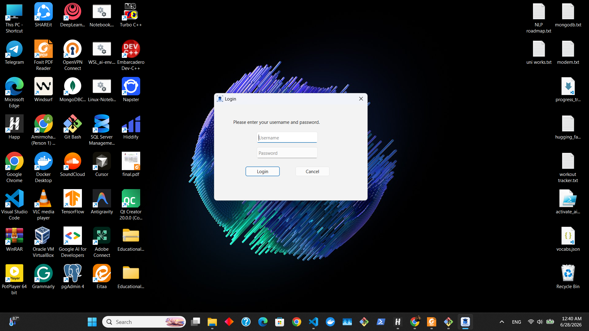
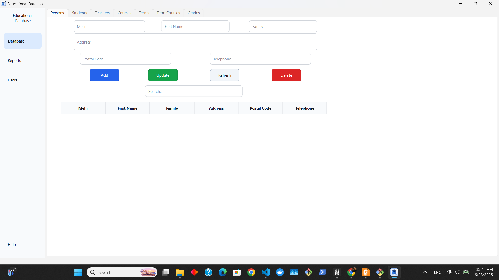
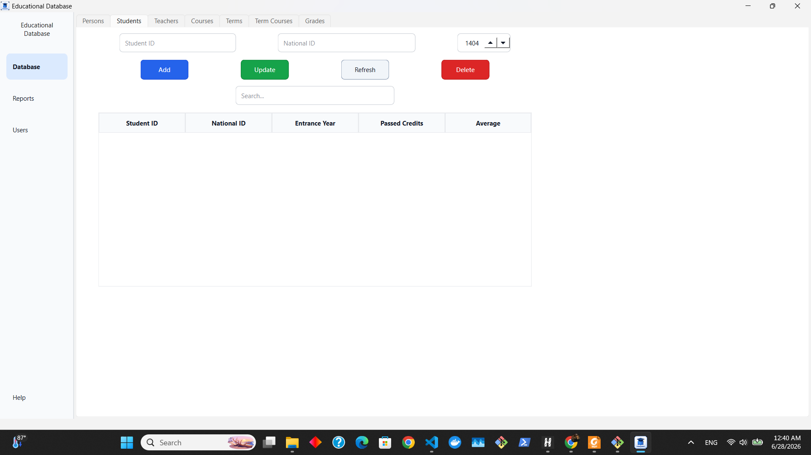
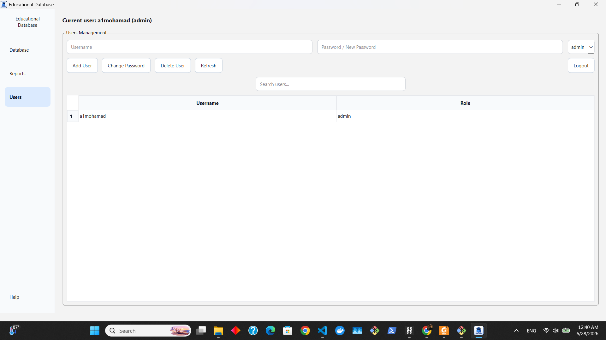

Desktop Flow
The application starts with authentication and then moves into a unified sidebar-based management window.


| Interface Area | Purpose | Why It Matters |
|---|---|---|
| Login dialog | Receives username and password before opening the application. | Separates public app launch from authenticated management. |
| Sidebar | Switches between Database, Reports, Users, and Help. | Keeps the app organized without multiple disconnected windows. |
| Database tabs | Expose each entity group as a dedicated tab. | Makes a multi-table project readable for a normal user. |
| Action buttons | Add, update, refresh, and delete the selected data. | Creates a predictable CRUD interface across the system. |
Navigation Contract
The desktop interface uses a small set of repeated patterns so the user does not need to relearn each page.
Database → Reports → Users → HelpPersons, Students, Teachers, Courses, Terms, Term Courses, Gradesinput → action → save → refresh tableSearch...CRUD Screen Pattern
The students tab is a compact example of the app pattern: fields at the top, actions in the middle, records below.

| UI Element | Behavior |
|---|---|
| Student ID | Unique student-side identifier used in the student table. |
| National ID | Connects the student record to the person identity records. |
| Entrance year | Stores the academic start year and supports student reporting. |
| Search box | Filters visible rows so the user can inspect records quickly. |
| Table headers | Show the current schema directly in the interface. |
Local File Storage
The project keeps the runtime simple by storing data in local files instead of requiring a database server.
data/
national_core.txt
national_details.txt
students.txt
teachers.txt
courses.txt
terms.txt
term_courses.txt
grades.txt
system_files/
users.dat|, keeping files readable and easy to inspect during development.Validation, Refresh, and Search
A desktop database app needs predictable behavior around editing, reloading, and inspecting records.
read form → validate → append recordselect row → edit fields → saveselect record → confirm intent → removereload model → repaint tableUsers Management Page
The users page handles accounts, password changes, roles, refresh, search, and logout from the same sidebar shell.

| Control | Role | Interface Evidence |
|---|---|---|
| Current user label | Shows who is logged in and whether the user is admin. | Current user: a1mohamad (admin) |
| Add User | Creates another account from username, password, and role fields. | Located inside the Users Management panel. |
| Change Password | Updates credentials for an existing user. | Uses the password/new-password input area. |
| Delete User | Removes an account when permitted. | Grouped with user administration actions. |
| Logout | Ends the current session and returns control to authentication. | Placed in the top-right of the users workspace. |
Login, Roles, and System Files
The project introduces a lightweight account layer around the educational management interface.
username + password → sessionrole = admin | usersystem_files/users.datlogout → close session → login againRepository and Runtime Structure
The app is organized around UI code, backend actions, file persistence, authentication, and release assets.
educational-database-qt/
main.cpp
MainWindow.ui
MainWindow.cpp / MainWindow.h
actions.cpp / actions.h
fileIO.cpp / fileIO.h
auth.cpp / auth.h
structures.h
system_files/
users.dat
data/
national_core.txt
national_details.txt
students.txt
teachers.txt
courses.txt
terms.txt
term_courses.txt
grades.txt| Layer | Responsibility | Portfolio Signal |
|---|---|---|
| Qt UI | Builds the login dialog, main window, sidebar, tabs, forms, and tables. | Desktop application development. |
| Actions | Coordinates add, update, delete, refresh, search, and report operations. | Application logic beyond static UI screens. |
| File I/O | Reads and writes local records for each entity group. | Persistence and state management. |
| Auth | Handles accounts, roles, password changes, and logged-in user state. | System design and administrative workflows. |
| Release | Packages the Windows build into a downloadable artifact. | User-facing delivery, not only source code. |
Why This Project Matters
The strength of the project is the bridge from basic C++ records to a usable desktop product.
This project matters because it demonstrates a different side of engineering from AI modeling: building a desktop interface, shaping a multi-entity data system, separating database records from user accounts, designing repeatable CRUD flows, embedding reports into the product, and shipping a Windows release. It shows that the portfolio is not limited to notebooks or model APIs; it also includes traditional software application development with C++ and Qt.